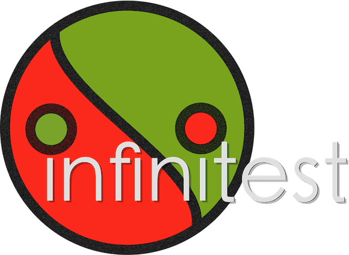

Working with Legacy Code
Amri HidayatMy Github

My LinkedIn

How Do I Know That I’m Not Breaking Anything?
Hyperaware Editing
Run tests as we refactor / introducee new features. Incredibly fast feedback

Single Goal Editing
Programming is the art of doing one thing at a time
Preserve Signature
Programming is the art of doing one thing at a time